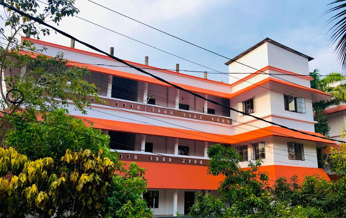

University of Calicut (UoC), the largest University in Kerala in terms of the expanse, affiliated colleges and the number of degrees awarded was established in the year 1968.It is the second University to be started in Kerala. The University caters to the educational requirements and aspirations of the youth in Malabar region, comprising of some of the educationally backward districts of the state.‘Nirmaya Karmana Sree’ being the motto ,which denotes "prosperity will be generated through pure actions", UoC has been able to surmount all challenges and has emerged as the largest residential cum affiliating University in Kerala, with 34 post-graduate Departments and 406 affiliated colleges. It is governed by Calicut University Act 1975, passed by the Legislative Assembly of Kerala. Recently the University celebrated its Golden Jubilee and the slogan of the celebrations was “University to Society”.
| COURSE | FEE |
|---|---|
| MCA | 25000 |
| BCA | 12000 |
| MSC | 22000 |